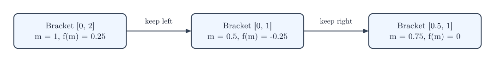
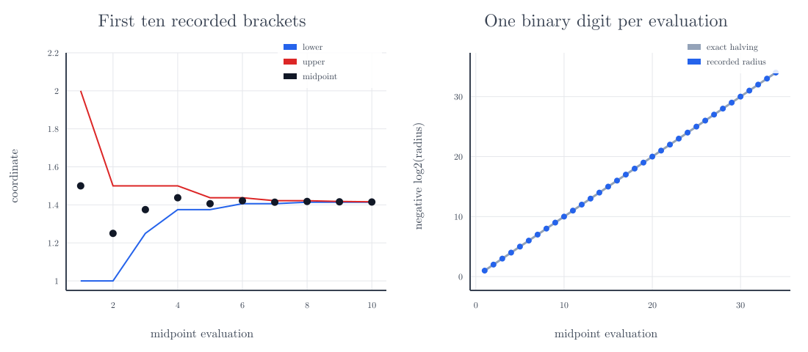

Bisection: Brackets, Residuals and Honest Stopping Rules
Abstract
Given a continuous function with opposite signs at two endpoints, locate a zero while retaining a bracket around at least one root. Halving provides a positional error bound, whereas a small function value alone generally does not. We work a three-step linear example, retain the original square-root calculation, and check the recorded bracket widths against the halving formula. Separate controls expose residual stopping, discontinuities, invalid callbacks, finite iteration budgets and exhausted floating-point precision.
The method
Assume f is continuous on \([a,b]\), with \(a<b\), finite evaluated values, and opposite nonzero endpoint signs. The intermediate value theorem gives a root in that interval. Evaluate its midpoint m. If \(f(m)=0\), stop; otherwise retain the half whose endpoints have opposite signs. Continuity preserves the root enclosure, and each nonterminal update halves the interval.
The core compares signs directly, without multiplying callback values. It uses an overflow-safe midpoint rather than forming a+b. The recorded radius is the rounded maximum of the distances from that midpoint to the two endpoints; this accommodates a floating midpoint that is not exactly central.
In exact arithmetic, for the kth midpoint evaluation, starting at k=1,
for at least one enclosed root r. Thus reaching a positional tolerance epsilon requires a number of evaluations growing logarithmically with the initial width divided by epsilon. The interval shrinks geometrically by one binary digit per step. This does not assert that the actual midpoint error decreases monotonically.
Simple example: three midpoint evaluations
For \(f(x)=x-3/4\) on \([0,2]\), the midpoint 1 has a positive value, so retain \([0,1]\). Midpoint 1/2 is negative, so retain \([1/2,1]\). The next midpoint 3/4 returns zero. These dyadic values are exactly representable.
#include <dm/dm.hpp>
int main() {
std::filesystem::create_directories("build");
const auto trace=dm::algorithms::bisection_trace([](double x){return x-.75;},0,2);
dm::graphics::Diagram diagram;
std::print("| evaluation | lower | upper | midpoint | f(midpoint) | radius |\n"
"| ---: | ---: | ---: | ---: | ---: | ---: |\n");
for (std::size_t i=0;i<trace.steps.size();++i) {
const auto& step=trace.steps[i];
diagram.node(std::to_string(i),{6.*i,0},std::format("Bracket [{}, {}]\nm = {}, f(m) = {}",
step.lower,step.upper,step.midpoint,step.f_midpoint));
std::print("| {} | {} | {} | {} | {} | {} |\n",i+1,step.lower,step.upper,
step.midpoint,step.f_midpoint,step.radius);
}
diagram.edge("0","1","keep left").edge("1","2","keep right");
diagram.save_svg("build/bisection_method.svg");
}| evaluation | lower | upper | midpoint | f(midpoint) | radius |
|---|---|---|---|---|---|
| 1 | 0 | 2 | 1 | 0.25 | 1 |
| 2 | 0 | 1 | 0.5 | -0.25 | 0.5 |
| 3 | 0.5 | 1 | 0.75 | 0 | 0.25 |

The original example: square root of two
Let \(f(x)=x^2-2\) on \([1,2]\). The first midpoints are
\(1.5,1.25,1.375,1.4375,\ldots\). The trace uses only the position test by
default. The historical bisection(f,a,b,tol,max_iter) interface remains
available and applies the same tol to both the residual and interval tests.
Both interfaces use the same underlying loop.
#include <dm/dm.hpp>
int main() {
std::filesystem::create_directories("build");
const auto f=[](double x){return x*x-2;};
const auto original=dm::algorithms::bisection(f,1,2);
const auto trace=dm::algorithms::bisection_trace(f,1,2,{1e-10,0,200});
std::print("| step | lower | upper | midpoint | radius |\n| ---: | ---: | ---: | ---: | ---: |\n");
std::vector<double> first,lower,upper,midpoint,all,measured,predicted;
for (std::size_t i=0;i<trace.steps.size();++i) {
const auto& s=trace.steps[i];
if (i<8) std::print("| {} | {:.8f} | {:.8f} | {:.8f} | {:.8f} |\n",i+1,s.lower,s.upper,s.midpoint,s.radius);
if (i<10) { first.push_back(i+1);lower.push_back(s.lower);upper.push_back(s.upper);midpoint.push_back(s.midpoint); }
all.push_back(i+1);measured.push_back(-std::log2(s.radius));predicted.push_back(i+1);
}
std::print("\nHistorical interface: root {:.12f}, residual {:.3e}, {} iterations.\n"
"Position-only trace: root {:.12f}, radius {:.3e}, {} iterations, {} callback calls, stop = {}.\n",
original.root,original.residual,original.iterations,trace.result.root,trace.radius,
trace.result.iterations,trace.evaluations,dm::algorithms::bisection_stop_name(trace.stop));
auto bracket=dm::graphics::RPlot::create();
bracket.lines(first,lower,"lower",dm::RGB{37,99,235},2)
.lines(first,upper,"upper",dm::RGB{220,38,38},2)
.points(first,midpoint,"midpoint",dm::RGB{17,24,39},5)
.title("First ten recorded brackets").x_label("midpoint evaluation").y_label("coordinate")
.y_limits(.95,2.2);
auto rate=dm::graphics::RPlot::create();
rate.lines(all,predicted,"exact halving",dm::RGB{148,163,184},3)
.points(all,measured,"recorded radius",dm::RGB{37,99,235},4)
.title("One binary digit per evaluation").x_label("midpoint evaluation").y_label("negative log2(radius)");
dm::graphics::RLayout::create(1,2).add(bracket).add(rate).size(1100,480).fit_panels()
.save_svg("build/bisection_sqrt_two.svg");
}| step | lower | upper | midpoint | radius |
|---|---|---|---|---|
| 1 | 1.00000000 | 2.00000000 | 1.50000000 | 0.50000000 |
| 2 | 1.00000000 | 1.50000000 | 1.25000000 | 0.25000000 |
| 3 | 1.25000000 | 1.50000000 | 1.37500000 | 0.12500000 |
| 4 | 1.37500000 | 1.50000000 | 1.43750000 | 0.06250000 |
| 5 | 1.37500000 | 1.43750000 | 1.40625000 | 0.03125000 |
| 6 | 1.40625000 | 1.43750000 | 1.42187500 | 0.01562500 |
| 7 | 1.40625000 | 1.42187500 | 1.41406250 | 0.00781250 |
| 8 | 1.41406250 | 1.42187500 | 1.41796875 | 0.00390625 |
Historical interface: root 1.414213562384, residual 3.154e-11, 29 iterations. Position-only trace: root 1.414213562326, radius 5.821e-11, 34 iterations, 36 callback calls, stop = interval.

The kth recorded radius is \(2^{-k}\) in this example. The strict position test is radius less than the requested tolerance; equality does not yet stop. Midpoint evaluation counts exclude the initial endpoint calls, which the trace reports separately. An endpoint callback zero needs no midpoint iteration.
A small residual does not bound coordinate error
Rescale the simple linear function to \(g(x)=10^{-20}(x-3/4)\). Its root has not moved. At the initial midpoint 1, however, the residual is \(2.5\times10^{-21}\), already below the historical tolerance \(10^{-10}\), even though the coordinate error is 1/4.
#include <dm/dm.hpp>
int main() {
const auto f=[](double x){return 1e-20*(x-.75);};
const auto combined=dm::algorithms::bisection_trace(f,0,2,{1e-10,1e-10,200});
const auto position=dm::algorithms::bisection_trace(f,0,2,{1e-10,0,200});
std::print("| stopping controls | estimate | actual coordinate error | residual | bracket radius | reason |\n"
"| :--- | ---: | ---: | ---: | ---: | :--- |\n");
for (const auto& [label,trace]:std::vector<std::pair<std::string,dm::algorithms::BisectionTrace>>{
{"historical combined tolerance",combined},{"position test only",position}})
std::print("| {} | {} | {} | {:.3e} | {} | {} |\n",label,trace.result.root,
std::abs(trace.result.root-.75),trace.result.residual,trace.radius,
dm::algorithms::bisection_stop_name(trace.stop));
}| stopping controls | estimate | actual coordinate error | residual | bracket radius | reason |
|---|---|---|---|---|---|
| historical combined tolerance | 1 | 0.25 | 2.500e-21 | 1 | residual |
| position test only | 0.75 | 0 | 0.000e+00 | 0.25 | zero callback |
A derivative lower bound can connect residual to position: if f is differentiable and \(|f'|\ge m>0\) between the estimate and a root, the mean value theorem gives \(|x-r|\le |f(x)|/m\). Without such information, a residual tolerance is a condition on function units rather than coordinate accuracy.
Checking the assumptions and failure modes
A finite jump can keep opposite endpoint signs without a root. The function that returns -1 below 0.3 and +1 elsewhere never returns zero, yet its brackets shrink to the jump. The interval stopping criterion can pass with residual one. Continuity is an assumption; the numerical routine cannot establish it.
#include <dm/dm.hpp>
int main() {
const double adjacent=std::nextafter(1.,2.);
const std::vector<std::pair<std::string,dm::algorithms::BisectionTrace>> trials{
{"no sign change",dm::algorithms::bisection_trace([](double x){return x*x+1;},-1,1)},
{"finite jump",dm::algorithms::bisection_trace([](double x){return x<.3?-1.:1.;},0,1,{1e-8,0,200})},
{"two-iteration budget",dm::algorithms::bisection_trace([](double x){return x*x-2;},1,2,{1e-30,0,2})},
{"adjacent endpoints",dm::algorithms::bisection_trace([](double x){return x==1?-1.:1.;},1,adjacent,
{std::numeric_limits<double>::denorm_min(),0,200})},
{"large finite coordinates",dm::algorithms::bisection_trace([](double x){return x-1.4e308;},1e308,1.6e308,{1e292,0,200})}};
std::print("| case | reason | stopping criterion passed | midpoint evaluations | residual |\n"
"| :--- | :--- | :--- | ---: | ---: |\n");
for (const auto& [label,trace]:trials) {
if (trace.stop==dm::algorithms::BisectionStop::NoBracket)
std::print("| {} | {} | false | 0 | — |\n",label,dm::algorithms::bisection_stop_name(trace.stop));
else std::print("| {} | {} | {} | {} | {:.3e} |\n",label,
dm::algorithms::bisection_stop_name(trace.stop),trace.result.converged,
trace.result.iterations,trace.result.residual);
}
try { (void)dm::algorithms::bisection_trace([](double x){return 1/x;},-1,1); }
catch (const std::domain_error& error) { std::print("\nPole callback: {}.\n",error.what()); }
}| case | reason | stopping criterion passed | midpoint evaluations | residual |
|---|---|---|---|---|
| no sign change | no bracket | false | 0 | — |
| finite jump | interval | true | 27 | 1.000e+00 |
| two-iteration budget | iteration limit | false | 2 | 4.375e-01 |
| adjacent endpoints | stagnation | false | 1 | 1.000e+00 |
| large finite coordinates | zero callback | true | 52 | 0.000e+00 |
Pole callback: bisection: callback returned a nonfinite value.
The maximum recorded midpoint-to-endpoint distance is a rounded quantity, not
an outward-rounded interval-arithmetic certificate. A midpoint can round to an
endpoint when no representable interior value remains. If neither tolerance
has passed, the solver returns stagnation instead of repeating that endpoint.
An overflow-safe midpoint handles large finite endpoints; nonfinite callback
values, including an evaluated pole, raise a domain error. A callback's returned
zero may itself reflect rounding or underflow, so even that reason is named
zero callback, rather than a mathematical proof of an exact root.
Conclusion
The original square-root example verifies the bracket contraction rate, and the scaled linear control separates residual stopping from coordinate accuracy. The trace exposes endpoint calls, midpoint counts, terminal brackets and actual stopping reasons. Under continuity and trustworthy evaluations, interval halving provides the positional argument; finite precision, callback errors and missing continuity remain explicit limits. These analytic controls need no observed dataset.
The unrecorded interface retains constant auxiliary storage and the historical combined tolerance. Recording uses one owned snapshot per midpoint evaluation, with independent function- and coordinate-unit tolerances.
References
- NIST Digital Library of Mathematical Functions, section 3.8(iii), Bisection Method. https://dlmf.nist.gov/3.8#iii